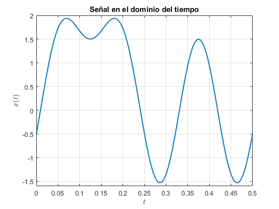
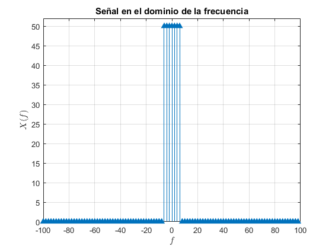
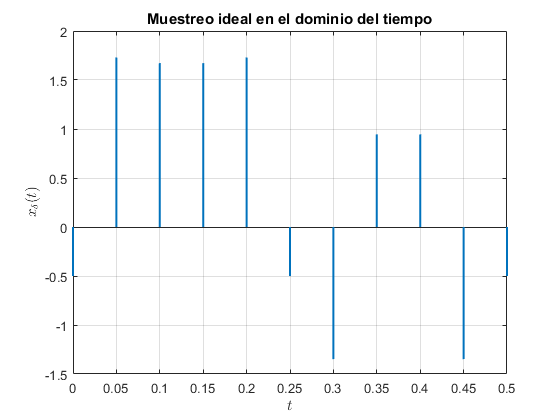
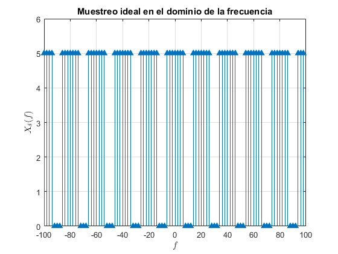
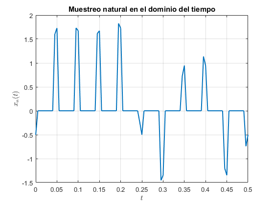
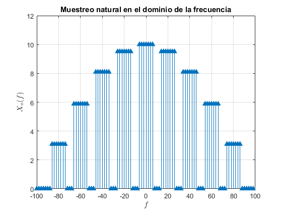
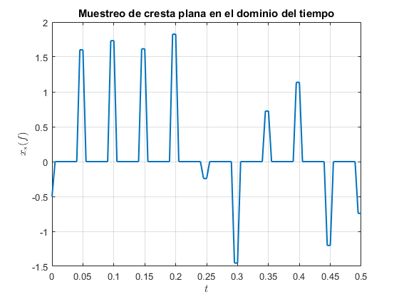
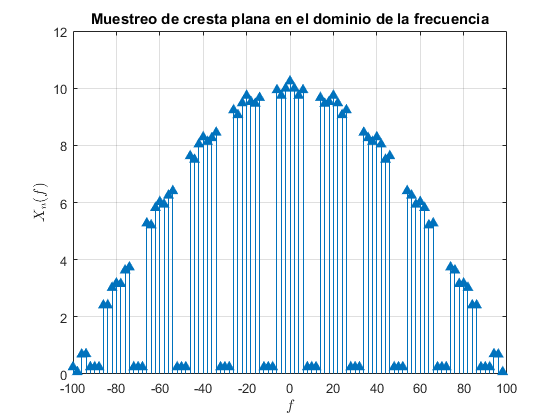

Contents
clear all
close all
t=0:.005:.5;
w=-100:2:100-1;
x = @(t) 0.5 + sin(4.*pi.*t) - cos(8.*pi.*t) + sin(12.*pi.*t);
fs=20;
d=0:1/fs:.5;
Graficas de señal original en tiempo y frecuencia
figure(1)
plot(t,x(t),'LineWidth',1.5);
title('Señal en el dominio del tiempo')
xlabel('$ t $','Interpreter','latex');
ylabel('$ x(t) $','Interpreter','latex');
axis([0 .5 -1.6 2])
grid on;
fx=fftshift(fft(x(t),100));
figure(2)
stem(w,abs(fx),'fill','^');
title('Señal en el dominio de la frecuencia')
xlabel('$ f $','Interpreter','latex');
ylabel('$ X(f) $','Interpreter','latex');
axis([-100 100 0 52])
grid on;
 
a) Muestreo ideal
h=pulstran(t,d,'rectpuls',0.001);
muestreoIdeal=x(t).*h;
figure(3)
stem(t,muestreoIdeal,'Marker','none','LineWidth',1.5);
title('Muestreo ideal en el dominio del tiempo')
xlabel('$t$','Interpreter','latex');
ylabel('$x_\delta(t)$','Interpreter','latex');
grid on;
fmi=fftshift(fft(muestreoIdeal,100));
figure(4);
stem(w,abs(fmi),'fill','^');
title('Muestreo ideal en el dominio de la frecuencia')
xlabel('$ f $','Interpreter','latex');
ylabel('$ X_\delta(f) $','Interpreter','latex');
grid on;
 
b) Muestreo natural
h=pulstran(t,d,'rectpuls',0.01);
muestreoNatural=x(t).*h;
figure(5)
plot(t,muestreoNatural,'LineWidth',1.5);
title('Muestreo natural en el dominio del tiempo')
xlabel('$t$','Interpreter','latex');
ylabel('$x_n(t)$','Interpreter','latex');
grid on;
fn=fftshift(fft(muestreoNatural,100));
figure(6);
stem(w,abs(fn),'fill','^');
title('Muestreo natural en el dominio de la frecuencia')
xlabel('$ f $','Interpreter','latex');
ylabel('$ X_n(f) $','Interpreter','latex');
grid on;
 
c) Muestreo de cresta plana
a=zeros(size(h));
temp=0;
for i=1:length(h)
if(temp==0 && h(i)==1 )
a(i)=x(t(i));
temp=x(t(i));
elseif(temp~=0 && h(i)==1 )
a(i)=temp;
elseif(temp~=0 && h(i)==0)
a(i)=0;
temp=0;
end
end
figure(7)
plot(t,a,'Linewidth',1.5);
title('Muestreo de cresta plana en el dominio del tiempo')
xlabel('$ t $','Interpreter','latex');
ylabel('$ x_s(f) $','Interpreter','latex');
grid on;
f=fftshift(fft(a,100));
figure(8)
stem(w,abs(f),'fill','^');
title('Muestreo de cresta plana en el dominio de la frecuencia')
xlabel('$ f $','Interpreter','latex');
ylabel('$ X_n(f) $','Interpreter','latex');
grid on;
 